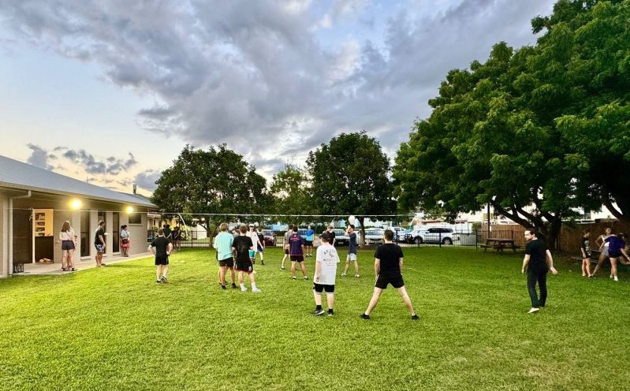

Plan your Sunday
A clearer way to plan your Sunday
Find service times, children’s programs, parking and a way to get in touch before you arrive.

Two Sunday services
9:00am is traditional, with hymns, prayer, Bible readings and a sermon. 10:30am is contemporary, relaxed and for all ages, with a Kid’s Talk and children’s programs in school term.
Your Sunday pathway
Before you leave
Find the church
119 Wills Street in Townsville City. Parking is available onsite and free street parking is available on Sundays.
At 10:30am
Bring the children
Creche is for ages 1 to 5 who can sit up independently. Kids Bible Time is for kindy and primary aged children during the sermon in school term.
After the service
Stay for morning tea
There is time to talk, ask questions and meet people after each service.